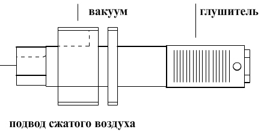

Применение: Достоинства. Общие характеристики
- Промышленные роботы во многих отраслях промышленности
- Деревообработка
- Упаковочная промышленность
- Пищевая промышленность
Отсутствуют подвижные элементы для увеличения срока службы и упрщения обслуживания
Малая масса

Описание
- корпус из анодированного алюминия
- внутреннее сопло - латунь
- глушитель - технополимер